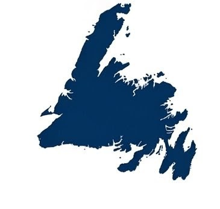

ABOUT THE MAKER
Welcome to DJ's Custom Prints. Started in Roddickton on the Great Northern Peninsula and now operating out of Flatrock, we specialize in high quality 3D printing and bringing custom gear to life with Cricut.
From clothing like t-shirts, sweaters, and jerseys, to personalized keychains and unique gifts, every piece is made locally with a focus on quality and detail. We also hand paint and varnish our premium 3D prints to give them a great finish.
Thank you for supporting a local Newfoundland business. Let's make something awesome!
Explore Our GalleryOUR PRODUCTS
- 👕 Custom Apparel (T-Shirts, Sweaters, Jerseys)
- ⚙️ High-Quality 3D Prints & Premium Keepsakes
- 🎄 Personalized Ornaments & Custom Keychains
- 📍 Custom Coordinates & Sports Themed Designs
- 🎁 Event-Specific Gifts
- And much more!
SKY'S CUSTOM CREATIONS
LOCALLY HANDMADE | EST. 03.2023
Looking for high-quality custom apparel, custom t-shirts, or personalized vinyl craft designs? Check out our partner business! Operating independently right here in Newfoundland, specializing in beautiful, custom Cricut apparel designs built to last.
Visit Her Facebook Page